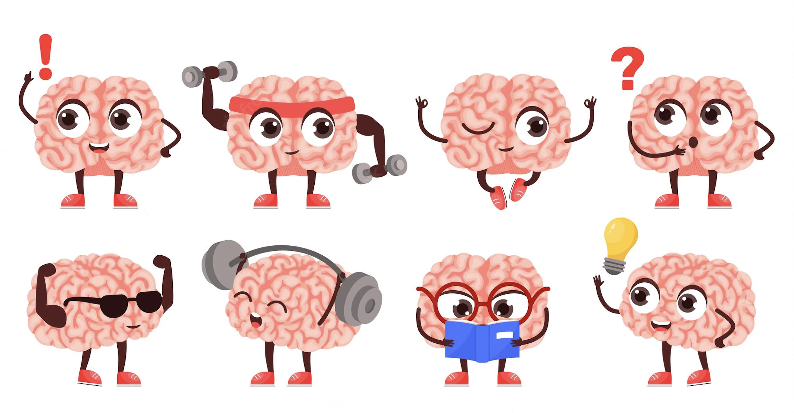

Phrasing Questions to Get A Response
08 Sep 2022
Smart Questions assist in understandings and development of knowledge
What are Smart Questions?
When an individual has a question, there are a magnitude of different ways that it can be phrased. Based on the framing of the question, it may elicit a different response from each individual. To receive the best response, it requires an individual to ask questions with a ‘smart question’ approach. This approach is elaborated on by Eric Raymond (2014) in the piece titled, “How to Ask Questions the Smart Way”, as a way to generate interactions effectively with the open source community. Through this approach in asking questions, individuals will be able to show their competency in the discipline and how, despite their attempts, they continue to remain confused and are looking for additional assistance in steering them in the right direction to solve their issue. By asking smart questions, it allows for an individual to be aware of the different attributes that can assist

Bad Phrasing of Questions
Through Raymond’s (2014) piece, it illustrates how when asking a question it is important to demonstrate that there has been previous knowledge of the topic, and the different venues an individual has taken, before asking the question. The respected open source community, along with using appropriate language styles such as professional over colloquial to elicit helpful responses from multiple individuals should be considered. It brings out the importance and relevance of using key objective terms in the title followed by the question laid out with the steps completed in a non-colloquial manner. As demonstrated by this Stack Overflow question titled “GAE email me errors” followed by the only sentence in the question “Can GAE be configured to bust me an email when there is an error message?” has elicited 2 responses which could be attributed to the lack of background information that was provided in the question or the different ways the individual themselves attempted to solve the issue. The language used to write the question also can be considered very colloquial such as the word “bust” instead of “send” and therefore leading individuals to merely skim the question and ignore it. The effects of using improper jargon and not foregrounding enough information are important. The two responses included a code of how to approach and how to do it rather than an explanation, demonstrating that the question was inefficient and ineffective since although the question was answered, the tone that it was answered with, was very direct and did not provide assistance or understanding to the individual. This potentially led to the person asking the question to remain confused on how to apply it to further code since there was not enough understanding of the different elements involved.
While jagon and foregrounding are key foundational elements to include in the inquiry, it is also important to note that when posting/ asking questions, although the question may be important to an individual, the individual is not entitled to a response. Along with asking the question it is important to be keen to what chain of questions/ forum groups to post in. By sounding entitled in a question, this leads individuals to merely skim over the question and not feel inclined or motivated to decipher and help the individual in their understanding to solve the issue. Also by ensuring the title breaks down the objective and elicits more of a response to read the question below, there will be less confusion. This can be demonstrated in the Stack Overflow question titled “Script to Email Me If a File Exists at a Certain Time” where it does not specifically mention the general point of confusion relative to the framework. It is only attempting to be implemented and is only mentioned in the question/ comment portion. In the comment, it mentions the specific script known as ‘korn shell script’ and uses the very direct connotation of the words “I need” as if being entitled to a response of instructions. Also, it is the very passive in the foregrounding of information of what commands are necessary to be used and the software being used, along with not being specific in the logic that was used to get to the question or attempts to solve the question. Although there were some codes provided to elaborate on the point of confusion, this led the community to not find that the question was an effective use of their time due to the broadness of the question. It also led to not understanding the foundation of the question. The question had a negative ranking, indicating that it was not helpful and demonstrated that the usage of the word, “need”, creates entitlement which led people to not feel inclined to make an attempt to solve the issue. In the one response to the question, there was very minimal verbatim and was generally giving a line of code noted as an attempt to remember how to do the language. This showed that by being broad and non-specific in the question, it led less people to be inclined to read the question

Good Phrasing of Questions
By asking smart questions, it demonstrates the individual’s work and effort and explains their thought process and reasoning. It will elicit a better, more effective and efficient response from people. This demonstration allows for developers/ responders to understand where the confusion may be and help to articulate information that will help an individual understand how to solve the issue or identify a solution for the issue that they are having. This can be seen in the Stack Overflow question titled “Use PUT vs PATCH methods in REST API real life scenarios.” The question can be seen below:
Title: Use of PUT vs PATCH methods in REST API real life scenarios
Question:
First of all, some definitions:
PUT is defined in Section 9.6 RFC 2616:
The PUT method requests that the enclosed entity be stored under the supplied Request-URI. If the Request-URI refers to an already existing resource, the enclosed entity SHOULD be considered as a modified version of the one residing on the origin server. If the Request-URI does not point to an existing resource, and that URI is capable of being defined as a new resource by the requesting user agent, the origin server can create the resource with that URI.>
PATCH is defined in RFC 5789:
The PATCH method requests that a set of changes described in the request entity be applied to the resource identified by the Request- URI.
Also according to RFC 2616 Section 9.1.2 PUT is Idempotent while PATCH is not.
Now let us take a look at a real example. When I do POST to /users with the data {username: 'skwee357', email: 'skwee357@domain.example'} and the server is capable of creating a resource, it will respond with 201 and resource location (lets assume /users/1) and any next call to GET /users/1 will return {id: 1, username: 'skwee357', email: 'skwee357@domain.example'}.
Now let us say I want to modify my email. Email modification is considered "a set of changes" and therefore I should PATCH /users/1 with "patch document". In my case it would be the JSON document: {email: 'skwee357@newdomain.example'}. The server then returns 200 (assuming permission are ok). This brings me to first question:
PATCH is NOT idempotent. It said so in RFC 2616 and RFC 5789. However if I issue the same PATCH request (with my new email), I will get the same resource state (with my email being modified to the requested value). Why is PATCH not then idempotent?
PATCH is a relatively new verb (RFC introduced in March 2010), and it comes to solve the problem of "patching" or modifying a set of fields. Before PATCH was introduced, everybody used PUT to update resources. But after PATCH was introduced, it leaves me confused about what PUT is used for. And this brings me to my second (and the main) question:
What is the real difference between PUT and PATCH? I have read somewhere that PUT might be used to replace entire entity under specific resource, so one should send the full entity (instead of set of attributes as with PATCH). What is the real practical usage for such case? When would you like to replace / overwrite an entity at a specific resource URI and why is such an operation not considered updating / patching the entity? The only practical use case I see for PUT is issuing a PUT on a collection, i.e. /users to replace the entire collection. Issuing PUT on a specific entity makes no sense after PATCH was introduced. Am I wrong? >
The title is able to demonstrate the language and their general specific point of confusion that they are looking for other developers to help determine where the differences are and the advantages and disadvantages. Within the body of the question there are definitions that refer to specific sections of documentation followed by explanations of their logic. Therefore, the foregrounding of this information and logic allows for people to be inclined to respond to the questions in a very effective manner where each question is explained in depth to bring a deeper understanding of the concepts that were confusing. There were multiple responses, notably more than the other stack overflow questions mentioned above, and in comparison can be considered very lengthy to bring out different attributes to the question and help the person asking to reconcile the information. It demonstrates that by showing an individual’s thought process and foregrounding information, it allows for people to have motivation to answer the question to bring a deeper understanding of the topic to the individual.
Further Application of Benefits of Smart Questions
Being aware of how to ask smart questions empowers an individual to be able to elicit a more direct and deeper understanding of the response to the question. Being able to ask smart questions is beneficial to all individuals. However, in particular for software engineers, it is vitally important since it allows individuals from all fields and backgrounds to contribute to a better understanding of software engineering nuances that may be confusing over time. It also leads to the encouragement and promotion of collaboration amongst individuals in the field who may be overcoming similar issues.